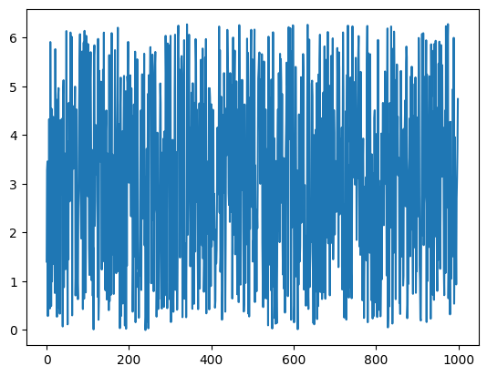
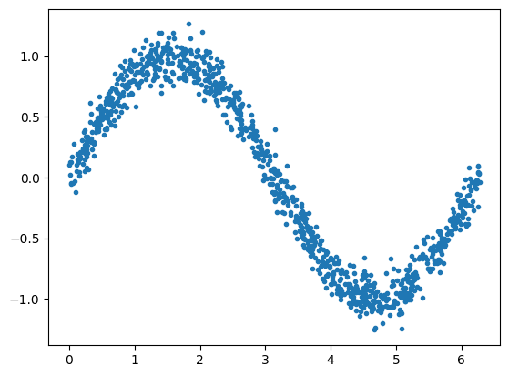
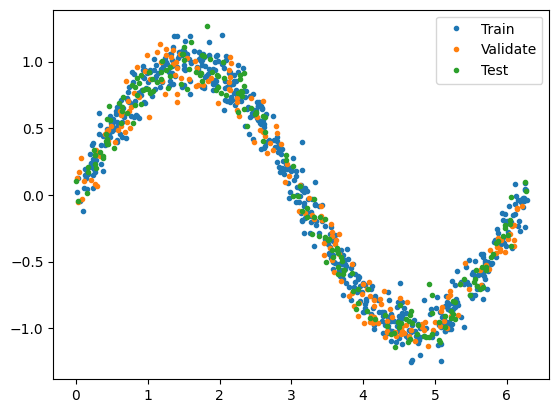
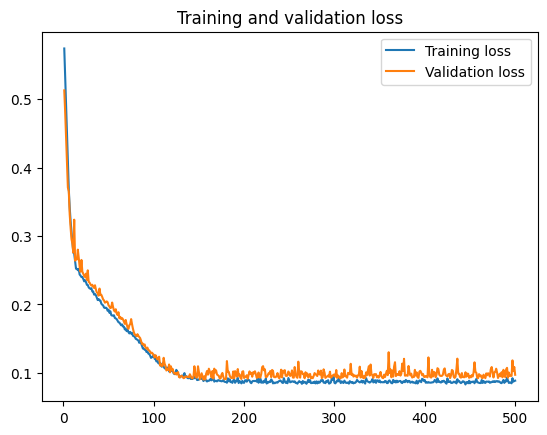
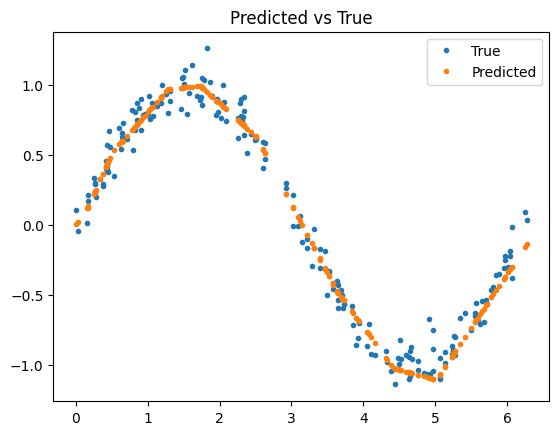
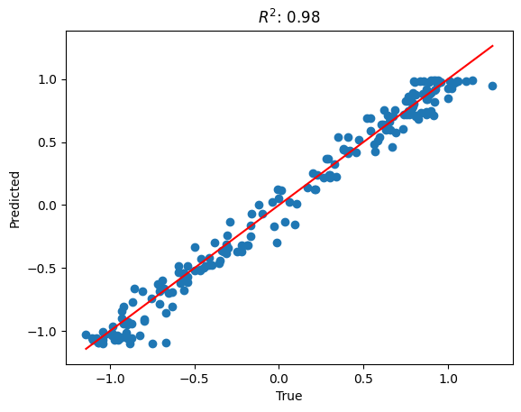

Creating a simple regression model using Tensorflow and Keras
Introduction
A typical setting where y is a measurement and X is an input can be found in many fields such as science, engineering, economics, and machine learning.
The relationship between X and y can be modeled as y = F(X) + ε, where F(X) is a function that maps X to y, and ε is the error term that accounts for the randomness or uncertainty in the predictions.
The goal is to learn the function F that best maps X to y with the smallest error ε. This is typically done by minimizing the difference between the predicted y values and the actual y values (i.e., minimizing the error term ε).
Import packages
The main packages that we use are Tensorflow and Keras. We also need a few supporting packages like math, numpy, and sklearn.
import math
import numpy as np
import matplotlib.pyplot as plt
import tensorflow as tf
from tensorflow import keras
from sklearn.metrics import r2_score
2024-02-11 11:12:46.080901: I tensorflow/core/platform/cpu_feature_guard.cc:182] This TensorFlow binary is optimized to use available CPU instructions in performance-critical operations.
To enable the following instructions: AVX2 FMA, in other operations, rebuild TensorFlow with the appropriate compiler flags.
Simulate inputs and outputs
We will simulate the function:
for a random number of X samples.
First, start by generating the X inputs - a few random samples between 0 and 2π. This will serve as our input:
nsamples = 1000
np.random.seed(16)
X = np.random.uniform(low=0, high=(2 * math.pi), size=nsamples)
plt.plot(X)
[<matplotlib.lines.Line2D at 0x135ccd110>]

Next, create a noisy sine wave from the X input. This will serve as our output, a.k.a. measurements or observations:
[<matplotlib.lines.Line2D at 0x148754550>]

Create Training, Validation, and Test datasets
Split the dataset into training, validation, and test sets:
# Percentage of samples that should be held for validation set
val_ratio = 0.2
# Percentage of samples that should be held for test
test_ratio = 0.2
# Split the dataset into training, validation, and test sets
val_split = int(val_ratio * nsamples)
test_split = int(val_split + (test_ratio * nsamples))
X_val, X_test, X_train = np.split(X, [val_split, test_split])
y_val, y_test, y_train = np.split(y, [val_split, test_split])
# Check that our splits add up correctly
assert(X_train.size + X_val.size + X_test.size) == nsamples
# Plot the data in each partition in different colors:
plt.plot(X_train, y_train, '.', label="Train")
plt.plot(X_val, y_val, '.', label="Validate")
plt.plot(X_test, y_test, '.', label="Test")
plt.legend()
plt.show()

Create a Deep Neural Network regression model with two hidden layers:
# create model
model = keras.Sequential()
model.add(keras.layers.InputLayer(input_shape=(1,)))
model.add(keras.layers.Dense(16, activation='relu'))
model.add(keras.layers.Dense(16, activation='relu'))
model.add(keras.layers.Dense(1))
# view model summary
model.summary()
Model: "sequential"
_________________________________________________________________
Layer (type) Output Shape Param #
=================================================================
dense (Dense) (None, 16) 32
dense_1 (Dense) (None, 16) 272
dense_2 (Dense) (None, 1) 17
=================================================================
Total params: 321 (1.25 KB)
Trainable params: 321 (1.25 KB)
Non-trainable params: 0 (0.00 Byte)
_________________________________________________________________
Add optimizer, loss function, and metrics to the model and compile it. The optimizer's job is to adjust the weights of the network to minimize the loss function.
Train the model
Train the model using the training and the validation datasets:
history = model.fit(X_train, y_train, epochs=500, batch_size=10, validation_data=(X_val, y_val), verbose=0)
Plot the training and validation history to visualize the training process:
loss = history.history['loss']
val_loss = history.history['val_loss']
epochs = range(1, len(loss) + 1)
plt.plot(epochs, loss, label='Training loss')
plt.plot(epochs, val_loss, label='Validation loss')
plt.title('Training and validation loss')
plt.legend()
plt.show()

Test the model
Predict the test output from the test input:
7/7 [==============================] - 0s 1ms/step
Compare the predicted observations to the true observations:
plt.plot(X_test, y_test, '.', label='True')
plt.plot(X_test, y_pred, '.', label='Predicted')
plt.title('Predicted vs True')
plt.legend()
plt.show()

The R-squared statistic, often denoted as R², is a statistical measure that represents the proportion of the variance for a dependent variable that's explained by an independent variable or variables in a regression model.
It provides a measure of how well the observed outcomes are replicated by the model, based on the proportion of total variation of outcomes explained by the model.
R² values range from 0 to 1. An R² of 1 indicates that the regression predictions perfectly fit the data.
r2 = r2_score(y_test, y_pred)
# plot the true vs predicted values
plt.scatter(y_test, y_pred)
# add a diagonal line
plt.plot([min(y_test), max(y_test)], [min(y_test), max(y_test)], color='red')
plt.title(f'$R^2$: {r2:.2f}')
plt.xlabel('True')
plt.ylabel('Predicted')
plt.show()

Appendix A.
Deep Neural Networks (DNNs)
Deep Neural Networks (DNNs) are often referred to as universal approximators. This term originates from the Universal Approximation Theorem, which states that a neural network with a single hidden layer containing a finite number of neurons can approximate any continuous function to a desired level of accuracy, given that the function is defined on a specific compact subset of real numbers.
However, in practice, DNNs with multiple layers are used because they can represent complex functions more efficiently, requiring fewer neurons than a single-layer network. The depth of these networks allows for the abstraction of high-level features from raw input data in hierarchical layers. Each layer in the network extracts and synthesizes features, becoming progressively more abstract at each level.
This makes DNNs extremely versatile and powerful in learning and approximating a wide variety of functions, contributing to their success in diverse fields such as image recognition, natural language processing, and reinforcement learning.
Determining the number of neurons and layers to use in a Deep Neural Network (DNN)
Determining the number of neurons and layers to use in a Deep Neural Network (DNN) is more of an art than a science, and it often involves a lot of experimentation. However, here are some general guidelines:
-
Number of Hidden Layers: Start with a single hidden layer for simple problems. If performance is not satisfactory, you can start adding more. In practice, most of the DNNs have between 1 and 5 hidden layers. Deep learning (with many hidden layers) is usually beneficial for complex problems like image recognition, natural language processing, etc.
-
Number of Neurons per Hidden Layer: A common practice is to size them to form a funnel, with fewer and fewer neurons at each layer—the so-called "funnel" architecture. Another approach is to choose a layer size that is somewhere between the number of input and output neurons.
-
Validation Set Performance: The most reliable way to configure your neural network architecture is to use a validation set. You train multiple networks with various layers and neurons, then compare their performance on the validation set, and choose the architecture that performs best.
-
Early Stopping: Another approach is to use a large number of layers and neurons and then rely on early stopping to prevent overfitting.
-
Grid Search or Random Search: These are systematic methods to explore many different configurations and then pick the best one.
-
Use Pretrained Networks: For many tasks, you can use a pretrained network that was trained on a similar task. This is called transfer learning.
Remember, these are just starting points. The optimal network architecture is highly dependent on the specific task and the data. It's often a good idea to experiment with different architectures, or use techniques like cross-validation to choose the best structure.
Optimizer
Adam, which stands for Adaptive Moment Estimation, is a popular optimization algorithm used in deep learning models. It's often used instead of the classical stochastic gradient descent procedure to update network weights iterative based on training data.
Adam combines the best properties of the AdaGrad and RMSProp algorithms to provide an optimization algorithm that can handle sparse gradients on noisy problems.
Adam is relatively easy to configure where the default configuration parameters do well on most problems. The main advantages of Adam are:
- Straightforward to implement.
- Computationally efficient.
- Little memory requirements.
- Invariant to diagonal rescale of the gradients.
- Well suited for problems that are large in terms of data and/or parameters.
- Appropriate for non-stationary objectives.
- Works well with very little tuning of hyperparameters.
Loss Function and Metrics
Mean Absolute Error (MAE) is a loss function used in regression problems. It's calculated as the average of the absolute differences between the true and predicted values.
Mathematically, it's expressed as:
Where:
- \(n\) is the total number of data points
- \(y_i\) is the actual value
- \(\hat{y}_i\) is the predicted value
MAE is a popular loss function for regression problems because it's easy to understand and calculate. It represents the average error in the same units as the original values, which makes it easy to interpret.
However, one limitation of MAE is that it doesn't account for the direction of the error and treats all errors equally, regardless of whether they are positive or negative. This means that MAE could be the same for two models that overestimate and underestimate the target variable, respectively.
In the context of neural networks, the network would aim to adjust its weights to minimize the MAE during the training process.
Convert the Jupyter notebook to Markdown
!jupyter nbconvert simple-regression-tesnorflow-keras.ipynb --to markdown --output simple-regression-tesnorflow-keras.md
[NbConvertApp] Converting notebook simple-regression-tesnorflow-keras.ipynb to markdown
[NbConvertApp] Support files will be in simple-regression-tesnorflow-keras_files/
[NbConvertApp] Writing 12697 bytes to simple-regression-tesnorflow-keras.md